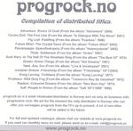

| Artist: | Various Artists |
| Title: | Progrock.No Sampler |
| Label: | www.progrock.no |
| Length(s): | minutes |
| Year(s) of release: | 2003 |
| Month of review: | [05/2004] |
| 1) | Adventure - Rivers Of Gold | 5.45 |
| 2) | Circles End - The Fine Line | 5.23 |
| 3) | Fig Leaf - Paddling | 4.35 |
| 4) | Future Whirl - The Crystal Dawn | 4.05 |
| 5) | Panzerpappa - Spacefunkopera | 8.43 |
| 6) | Thule - Soldansen | 4.24 |
| 7) | Aunt Mary - In The Hall Of The Mountain King | 4.36 |
| 8) | Dream - Green Things | 3.16 |
| 9) | Host - Ase, Live | 3.20 |
| 10) | Junipher Greene - Friendship | 4.51 |
| 11) | Kong Lavring - Trolldans | 3.27 |
| 12) | Prudence - Mild Grey Fog | 3.26 |
| 13) | Ruphus - Coloured Dreams | 4.08 |
| 14) | Saft - People In Motion | 3.07 |
Circles End just released a new album, but this is The Fine Line from an earlier one (2001). During the first notes, it becomes evident that 1. the music has a much clearer recording, and 2. that this band probably has a sense of humour. In fact, the music is sprightly and diverse. The vocalist is also better, and he has the luck of a distinctive voice. Circles End is hard to categorize. The grooviness of the guitar, the complicated runs, but also the rather accessible vocal choirs, tend to direct me towards Saga, but also Spock's Beard.
Fig Leaf's Paddling is from Fearless, a record already reviewed on this site. This a high pace adventure with estranging vocals. Future Whirl's The Crystal Dawn opens melodically with piano and strumming acoustic guitar, and it stays that way generally. Nice tune.
Panzerpappa bring us Spacefunkopera, which is good song waltzy at times, in others having a tense undercurrent. Music that holds its breath. The style of the band mainly points to Univers Zero and Canterbury music, with a French twist. Good, and at times potent too.
Thule's Soldansen is from Graks which is certainly not their best album. The vocals on this one are very gloomy, like early goth, but the music is melodic enough. The second part is instrumental, and does not really fit in well with the rest.
Yet another In The Hall Of The Mountain King (from Peer Gynt), is brought to us by Aunt Mary. This is an older track, from 1974 in fact. I guess, the music itself is well-known to most, a bit on the quirky side plodding, and this version is dominated by organ, with the pace gradually going up. The band even goes latin at some point. More adventurous than one would think at first.
Dream - Green Things is the oldest song on the album, having been recorded in 1967. Plenty of pacey organ, the gravelly vocals, the sweet backing vocals all point to a strong influence from the then current beat scene from the UK. Not bad, but a bit rough.
Host made an excellent album with Hardt Mot Hardt. This is a live version of Ase from their Live & Unreleased album. This is early progressive rock in its purest form, with references to a band such as Focus. Melodic and short. Junipher Greene's Friendship is Tull, but with a hippy outlook on the world. Does not really fit in lyrically with modern times, and the music is dated too.
Kong Lavring's Trolldans is Norwegian folk, sung in Norwegian. Later the acoustics are replaced by twangy electric guitar. Something of Steve Howe in there. Prudence - Mild Grey Fog does not have the sound quality we currently expect of music these days. Typical seventies progrock, with folk feel at times. Ruphus is the most successful of the bands here featured recording quite a few albums in there time. Coloured Dreams is from New Born Day. The main focus of the band is the female vocalist, comparable to Atlantis' Inga Rumpf and a bit of Janis Joplin. Musically, plenty of organ here and riffy guitars.
People In Motion is the pop closer by Saft. This is beat and was already dated when it was released in 1971. Okay, maybe I cannot really tell this kind of thing as I was two years old when that happened.